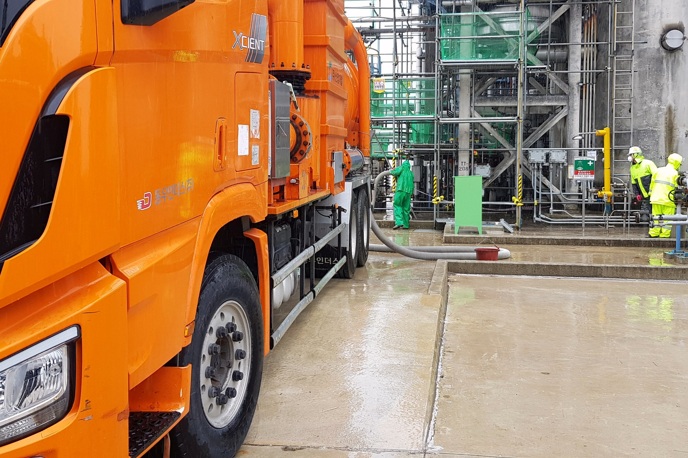
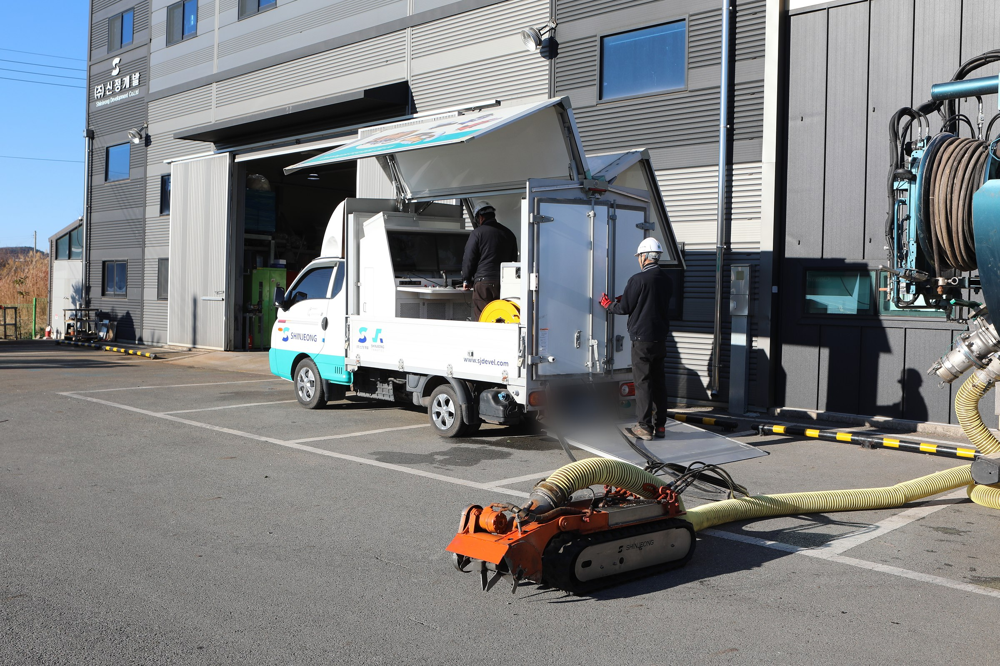
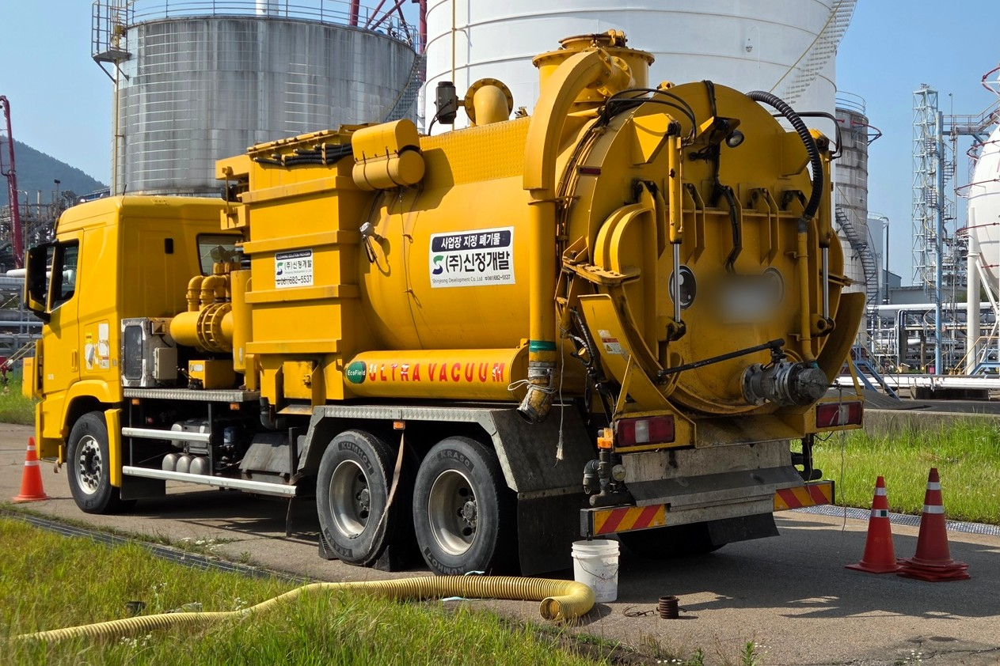
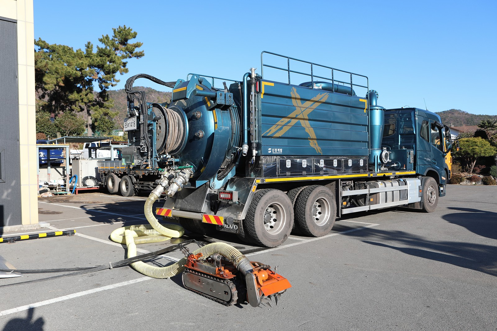
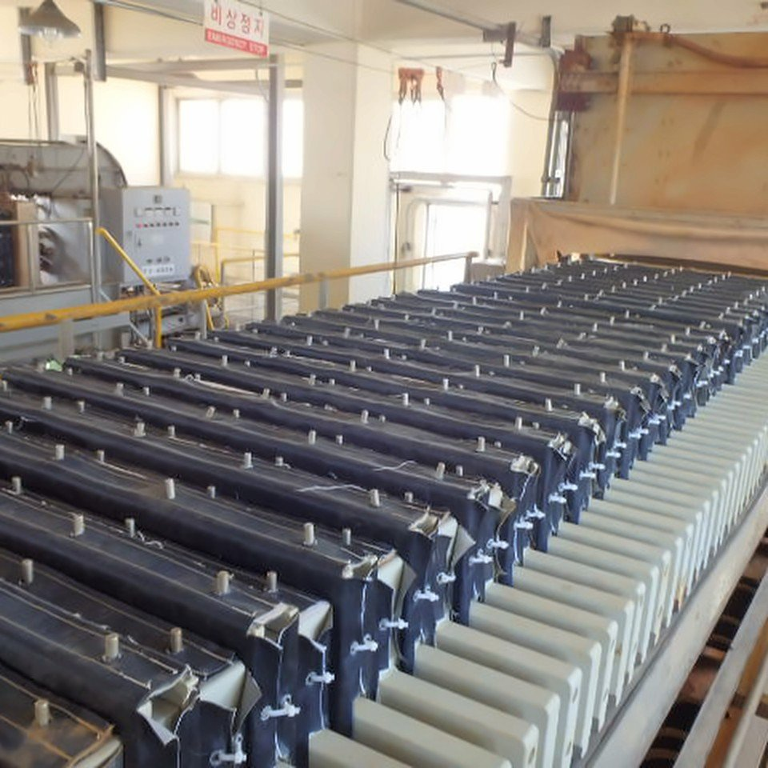
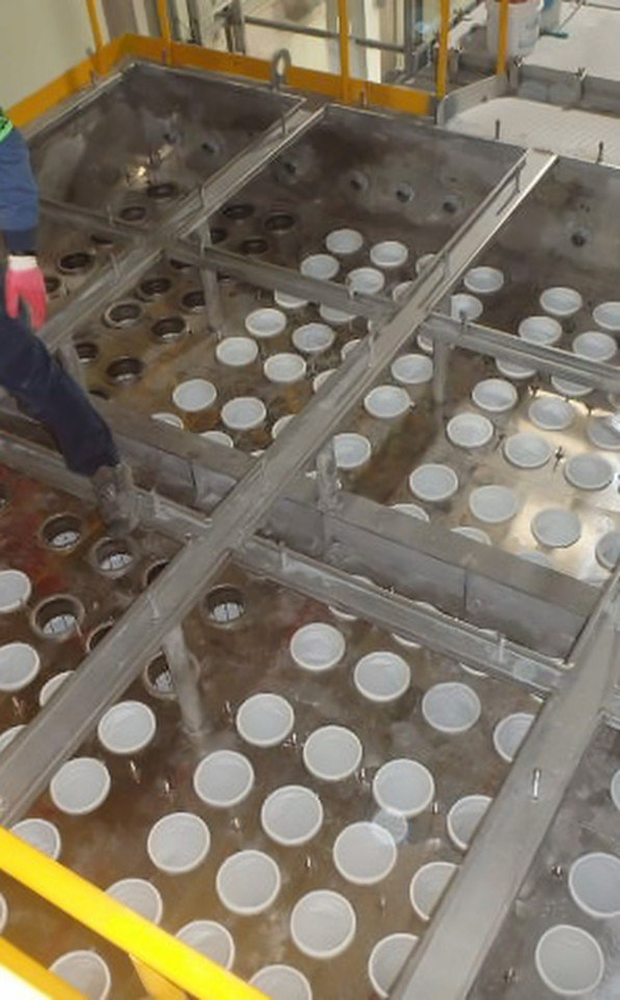

- 작업 범위
- 탱크
- Pond
- 공장 내부 배수로
- R.T.O
- Filter Press 세정
- Bag Filter 교체
- 주요 장비
- 진공흡입차 · 흡입 로봇 · 제어 차량
- 작업 시기
- 저장탱크 개방검사 기간
- 투입 로봇
- 흡입 로봇
- 문의 시
- 대상 설비 · 작업 목적 · 알고 있는 크기·구조·잔류물 정보
01설비 클리닝작업 방식
탱크 · Pond 클리닝은 이렇게 합니다
Robot-Tank Cleaning System, 여섯 단계로 작업합니다.
작업 장면
로봇이 먼저 들어가 회수합니다
로봇이 먼저 설비 내부에 진입해 슬러지와 잔류 위험 물질을 회수합니다. 작업자는 외부 제어 차량에서 CCTV로 확인하며 원격 조정합니다.
질식 · 매몰 · 협착 등 인명사고 위험 감소
작업 장면 모두 보기

02설비 밖1차 Washing
Vacuum Car(흡입차)를 이용해 외부에서 잔여 물질 제거
진공흡입차(습식) 5대
- 042차 Washing
 05설비 안 · 작업자
05설비 안 · 작업자Final Cleaning
작업자 투입 · 내부 최종 잔여물 제거
- 06폐기물 처리
탱크 · Pond 밖의 작업
공장 내부 배수로 · R.T.O 유지보수·클리닝 · Filter Press 세정 · Bag Filter 교체


01설비 클리닝보유 장비
세척 · 흡입 장비
진공흡입차로 잔류물을 흡입하고 고압 JET-CLEANER로 세척합니다. 위험한 내부 작업에는 흡입 로봇을 먼저 투입하고, 작업자는 설비 밖 제어 차량에서 조종합니다.
| 장비 | 규격 | 용도 | 보유 |
|---|---|---|---|
| 진공흡입차(습식) | 7.5 / 12㎥ | 폐기물 수집·운반, 준설 | 5대 |
| 고압 JET-CLEANER | 1,000bar × 100ℓ/min | 세척 | 3대 |
| 소형 JET-CLEANER | 200 · 250 · 400bar × 100ℓ/min | 세척 | 6대 |
| 온수·스팀 JET-CLEANER | — | 세척 | 3대 |
| 고압세척유닛 | — | 세척 | 3대 |
| 고압세척기 | — | 세척 | 1대 |
01설비 클리닝알아 두실 점
Tank / Pond Cleaning 용도별 적용 예시 — 로봇을 쓸 때 좋아지는 점과 유의할 점
좋아지는 점
- 인명사고 위험 감소 — 질식, 매몰, 협착, 넘어짐 등
- 연속 작업으로 능률 향상(130%) — 조작자 교대, 장비 연속 가동
유의할 점
- 작업자 추가 투입 필요 — 유해성 감소 후 Final Cleaning 인력 작업
- 인원 작업 대비 작업성 저하(70%) — 연속 작업으로 상쇄 가능(91%)
적용 범위
- 방폭지역(고위험가스 설비) 작업 가능(유압구동) — 궤도부 고무재질, 파쇄 및 접촉 부분 Non-spark 재질
- 수중 작업 및 Water Jet-Cleaning 등 동시 작업 가능
- CCTV, Jet 등 추가 장비 장착 가능
01설비 클리닝
탱크 · Pond 클리닝이 필요하신가요?
대상 설비 · 작업 목적 · 알고 있는 크기·구조·잔류물 정보 등을 알려 주시면 가능한 작업 범위와 진행 방법을 안내해 드립니다.